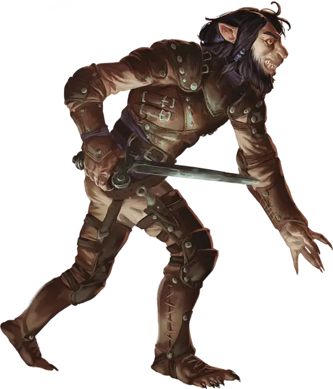

Шифтер
Shifter
Средний Гуманоид (Шифтер), любое мировоззрение

Класс Доспеха 14 (кожаный доспех)
Хиты 19 (3к8 + 6)
Скорость 30 футов
| мод | спас | ||
|---|---|---|---|
| СИЛ | 12 | +1 | +1 |
| ЛОВ | 16 | +3 | +3 |
| ТЕЛ | 14 | +2 | +2 |
| мод | спас | ||
|---|---|---|---|
| ИНТ | 11 | +0 | +0 |
| МДР | 15 | +2 | +2 |
| ХАР | 10 | +0 | +0 |
Навыки Акробатика +5, Восприятие +4, Природа +2, Проницательность +4
Чувства тёмное зрение 60 футов, пассивное Восприятие 14
Языки Общий
Опасность 1/2 (100 опыта)
Бонус мастерства +2
Особенности
Превращение (перезарядка после короткого и продолжительного отдыха). Бонусным действием шифтер может принять звериный облик на 1 минуту или пока не умрёт. Шифтер получает 5 временных хитов. Он может совершать атаку укусом, когда принимает вид животного и может бонусным действием совершать атаку укусом каждый свой ход.
Действия
Короткий меч. Рукопашная атака оружием: +5 к попаданию, досягаемость 5 футов, одна цель. Попадание: 6 (1к6+3) колющего урона.
Укус. Рукопашная атака оружием: +5 к попаданию, досягаемость 5 футов, одно существо. Попадание 5 (1к4+3) колющего урона.
Описание
Шифтеры связаны с первобытными духами, которых большинство из них называют внутренним зверем. Они гибки и имеют звериные черты: большие глаза, плоские носы, заостренные уши и светлый мех на большей части тела. Когда внутренний зверь побеждает, "превращаясь", эти черты становятся еще более выраженными.